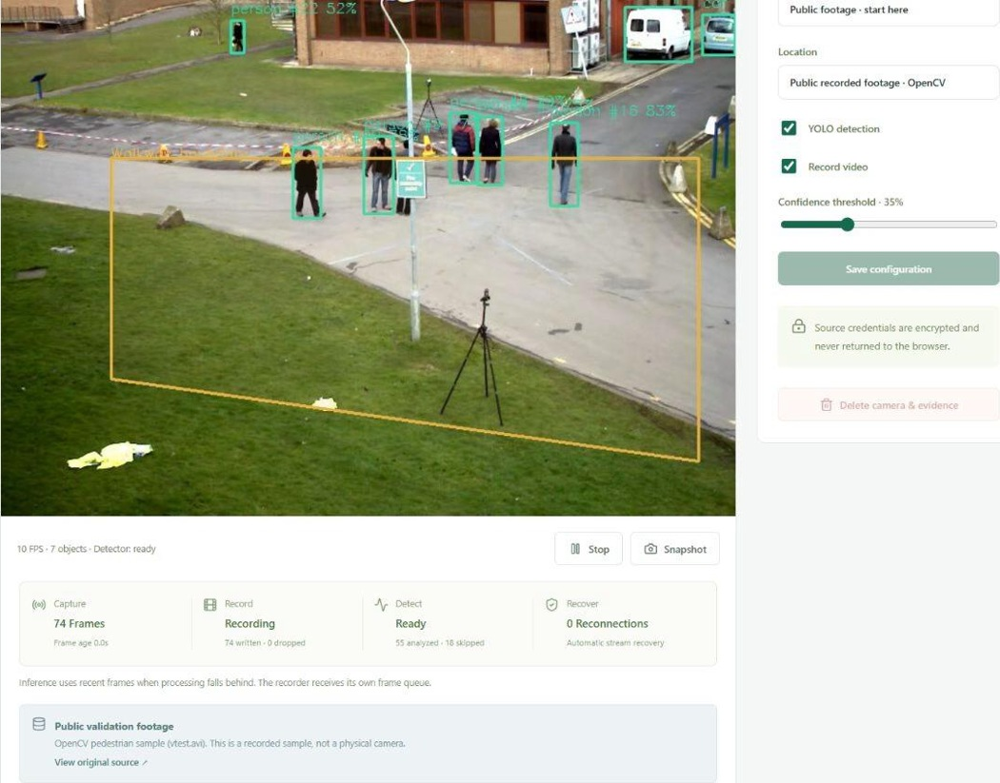

Independent recording
A bounded recording queue and separate inference path keep slow detection from blocking recording. Dropped and skipped frames are reported separately.
ORIGINAL COMPUTER VISION PROJECT · v0.2
MT Project turns video into tracked objects, restricted-zone events, and reviewable evidence. A working full-stack surveillance prototype, from capture to operator response.
Independent project · Real application capture · Public validation footage

01 / THE APPLICATION IN ACTION
Captured from the functioning local application. Captions explain each step; no audio is required.
Start the recorded source and inspect real detections, track IDs, and source readiness.
Filter intrusion events, play an incident clip, and acknowledge the reviewed event.
Play a stored recording and inspect saved webhook attempts: HTTP 503, then 204.
02 / BEHIND THE INTERFACE
Capture, recording, and inference have independent execution paths, with bounded queues and visible health.
Per-camera capture
Latest-frame inference
Track-based cooldowns
Database + signed retries
A bounded recording queue and separate inference path keep slow detection from blocking recording. Dropped and skipped frames are reported separately.
Events retain the triggering zone, class, confidence, track, snapshot, and pre/post-event clip with an explicit trigger offset.
A durable outbox, signed webhook payloads, retry leases, and per-attempt outcomes make delivery behavior inspectable.
Role-based access, revocable sessions, encrypted source credentials, and authenticated media routes protect the workspace.
03 / EVIDENCE & BOUNDARIES
An independent, AI-assisted engineering prototype built with original application code and credited public libraries.
Read the executed validationCPU YOLO processing, tracking, zone alerts, incident clips, recording playback, reconnection tests, and real local webhook retries.
Docker, PostgreSQL configuration, migrations, automated tests, and architecture documentation. The current runtime uses one application process.
Physical RTSP cameras, GPU hardware, sustained capacity, target-server Docker/PostgreSQL operation, and production security. No accuracy score or uptime guarantee is claimed.
EXPLORE THE ENGINEERING